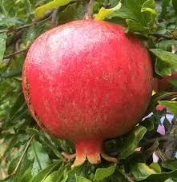

Ensemble folklorique provençalLa Miougrano
de Fréjus
Depuis 1959, nous faisons vivre à Fréjus la danse, la musique, le chant, les costumes et la langue de Provence. Entrez dans la farandole !
La grenade aux mille graines, symbole d'un peuple réuni
« Miougrano », c'est la grenade en provençal. Comme ce fruit réunit les oiseaux et les nourrit, La Miougrano réunit le peuple provençal et nourrit son esprit.
Fondé en 1959 à Fréjus, l'ensemble participe ou organise toutes les manifestations traditionnelles fréjusiennes et représente la Ville et la Provence en France comme à l'étranger. Danseurs, musiciens et chanteurs de tous âges se retrouvent plusieurs fois par semaine au Fougaù, notre maison provençale du centre historique.


Foire aux santons 2026
Chaque année, La Miougrano installe sa foire dans la salle médiévale Riculphe de l'Hôtel de Ville : santonniers venus de toute la Provence, petits santons d'argile et grands santons habillés, crèches, douceurs… et le vin chaud servi par nos membres en costume !
Ouverture de la foire dans…
- Dates
- Du samedi 5 au dimanche 20 décembre 2026 dates annoncées, à confirmer
- Lieu
- Salle Riculphe, Hôtel de Ville de Fréjus (place Formigé)
- Horaires
- Tous les jours 10h–12h et 15h–19h, sauf le lundi matin (horaires 2025)
- Entrée
- Libre et gratuite

Tout ce qui fait vibrer la Provence
Des danses de caractère virtuoses aux noëls chantés en provençal, en passant par l'atelier couture : explorez nos traditions.

Volte, rigaudon, chivau-frus…
Danses de couple, de caractère ou magico-religieuses, en costume provençal époque 1830.
Découvrir →
Préparer sa crèche
Une vingtaine de santonniers, des petits santons d'argile aux grands santons habillés.
Le programme →Fête du raisin, Bravade, Noël
Spectacles, concerts, défilés : retrouvez-nous tout au long de l'année.
L'agenda →
Nos plus belles images
Photos classées par événement : foire, fêtes, costumes, musique.
Voir la galerie →
Danser, jouer, chanter
Danseurs, musiciens, chanteurs, couturières et bénévoles : il y a une place pour vous.
Rejoindre →
Santonniers & artisans
Informations pour exposer à la foire et soutenir l'association.
En savoir plus →Un Noël provençal avec La Miougrano
De l'ouverture de la foire aux treize desserts, décembre se vit en musique et en costume.
La foire ouvre
Inauguration et premiers visiteurs salle Riculphe.
Costumes & vin chaud
Accueil en costume, tambourinaires et vin chaud offert cour de l'Évêché.
Fifres & tambours
Défilé du 1er Régiment de Provence dans le cœur historique.
Concert de Noël
Chants et musiques provençales à la cathédrale Saint-Léonce.
Messe de minuit
L'« ouferto calendalo », puis cacho-fio et treize desserts au Fougaù.
Actualités

La Foire aux santons revient en décembre
Salle Riculphe, du 5 au 20 décembre 2026 (dates annoncées). Inauguration le dimanche 6 décembre.

Défilé des fifres et tambours le 12 décembre
Le 1er Régiment de Provence défile dans le cœur historique pendant la foire.

Fête du raisin 2026 : la Suisse invitée
Messe du raisin, danse de la souche et fifres suisses au cœur historique.

Intra dins la danso !Envie de danser, jouer ou chanter avec nous ?
Danseurs, tambourinaires, choristes, couturières ou bénévoles pour la foire : La Miougrano accueille toutes les bonnes volontés, débutants compris.